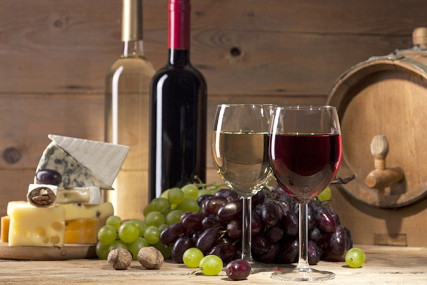

En Vino y Cultura, nuestro amor por el vino nos impulsó a embarcarnos en este apasionante viaje. Aunque no venimos del mundo vitivinícola, nuestra pasión por el vino y el deseo de compartirlo nos llevó a crear este espacio único.
Nuestro compromiso desde el principio fue ofrecer vinos y espumosos de bodegas premium o boutique, así como cepas no tradicionales, productos gourmet. Queríamos destacarnos por ofrecer productos que no se encuentran fácilmente en las grandes cadenas.
Comenzamos modestamente, compartiendo nuestra pasión con amigos y familiares. Con el tiempo, fuimos creciendo y expandiéndonos, hasta inaugurar nuestra tienda online y nuestro espacio físico en la provincia de Buenos Aires, específicamente en Tandil. Este espacio se ha convertido en mucho más que una simple vinoteca; es un lugar de encuentro, donde nos reunimos para catar, degustar y compartir historias alrededor del vino.
En Vino y Cultura, nuestra misión es ofrecer una experiencia única a cada cliente. Nos esforzamos por crear un ambiente cálido y familiar, donde cada participante pueda disfrutar del momento y salir de él enriquecido y con ganas de volver.
Somos un emprendimiento familiar, y cada botella que ofrecemos lleva consigo nuestro compromiso y pasión por el vino.

La Vid, la planta del vino
La vid es una planta trepadora, de la familia de las vitáceas, que produce frutos en forma de baya: las uvas. Las vides se caracterizan por tener un tronco retorcido y leñoso, además de ramas flexibles y nudosas. La vid tiene de vida unos 50 años, ya que cuanto más envejece la planta menos uvas produce. Aunque es cierto que podemos encontrar plantas de uvas centenarias, pero que no producen tanto como las jóvenes.
Hay múltiples variedades de vides, sobre todo en la actualidad y debido a los procesos de hibridación,
la más habitual es la vitis vinifera, procede del mediterráneo europeo y es la elección predilecta para elaborar vinos, aunque también lo es para otros productos de alimentación, como jugos o mermeladas.